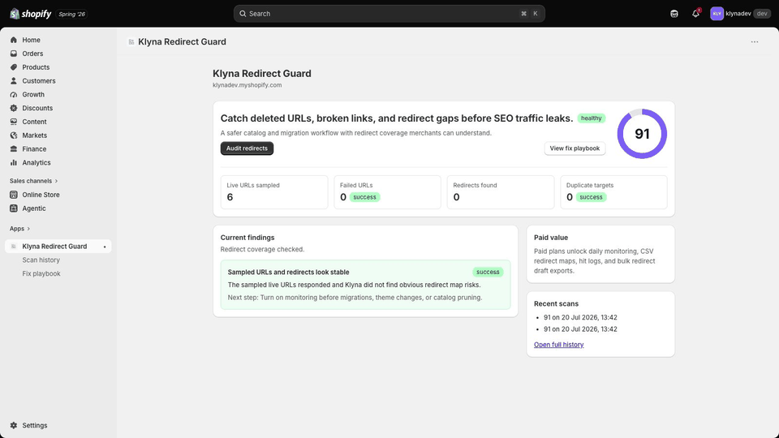
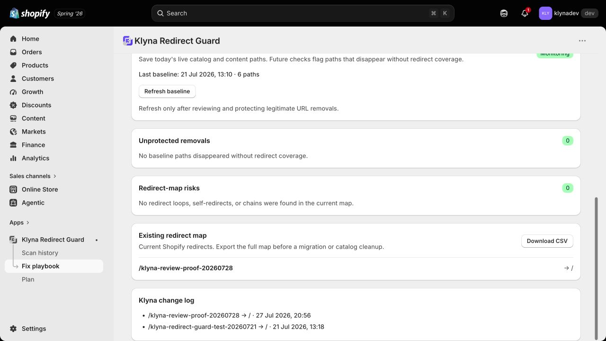

Klyna Redirect Guard review walkthrough
This public walkthrough shows the reviewer the core merchant workflow for Klyna Redirect Guard.

Redirect creation verified
This production test created /klyna-review-proof-20260728 and pointed it to the live storefront home page. The new redirect appears in both Shopify's redirect map and Klyna's timestamped change log.

- Install Klyna Redirect Guard on a development store.
- Open the embedded app from the store admin.
- Approve the Starter test billing plan when prompted.
- Click Audit redirects on the dashboard.
- Open Fix playbook and enter an unused retired source path.
- Enter / as the safe live destination.
- Check the explicit review confirmation, then click Validate and create redirect.
- Confirm the redirect appears in Existing redirect map and Klyna change log.
- No separate Klyna account is required.
Support: hi@klyna.dev